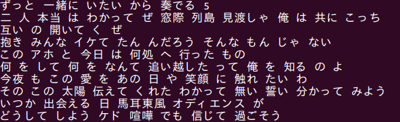
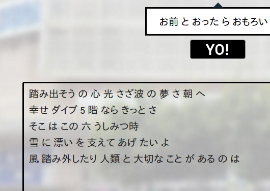

マイルドヤンキー風歌詞自動生成ツール
このシステムは自動で日本語の歌詞をつくり出します。主に次のふたつのステップで構成されています。(1) 歌詞候補の作成、 (2) 意味や文の構成に基づいて歌詞を選択
多層のニューラルネットワークモデルに基づく機械学習手法 (Deep Learning) が、その性能の高さから近年注目を集めています。
そのニューラルネットワークの一つである Long-Short Term Memory (LSTM) は、モデルの中に過去の状態を記憶し、それに基づいて次の要素を予測するという能力を持っています。この記憶の能力により、文脈をとらえた文生成のモデルを精度よく学習することができます。
作詞は人間の高度な創作活動の一つです。そこでは、文の長さを曲の長さに合わせる、前後の文と韻を踏む、といった制約のもとで、曲の中に物語やメッセージを織り込むことが求められます。
今回のハッカソンでは、様々な分野で有効性が示されてきた LSTM を作詞のような高水準の仕事に適用することで、人間に近い歌詞を生成することを目指しました。この試みについては、英語では [Malmi et. al, '15][Potash et al., EMNLP'15] といった文献が今年発表されています。このシステムは2つの文献で提案された方法を組み合わせながら、
シンギュラリティの問題が叫ばれる中、作詞活動も機会によって置き換えられてしまうのか、あるいは機械が生成する歌詞と人間の作詞を比べて、改めて人間の芸術活動の奥深さに気づくことになるのか、非常に興味深いテーマです
まず言語モデルを学習します。言語モデルというのは、「おいしい」のあとに「パスタ」、「パスタ」のあとに「作った」が続きやすい、といった現象を確率値で表したものです。これを実際の歌詞データを調べることにより計算します。
このシステムは LSTM と呼ばれる、長い文脈を捉えることが可能なモデルを使っています。これにより、「おいしいパスタ作ったお前」「家庭的な女がタイプの俺」のような長い単語列を記憶しておき、それを用いて次に「一目惚れ」が来ることを予測することができます。[出典: 湘南乃風, 純恋歌]
次に歌詞の系列 (sequence) を学習します。これは「俺は東京生まれヒップホップ育ち」という歌詞の一行があるときに、次の一行が「悪そうな奴はだいたい友達」 であることを当てるモデルです (例えば、文の長さが似ていること、末尾の母音が一致していることが根拠に使えるでしょう)[出典: Dragon Ash, Grateful days]。これによって、大量の文を歌詞っぽく並び替えることが可能になります。
この問題には、 rankSVM という、広く使われている SVM のランキング学習版を利用します。特徴量としては、文の長さ、母音の一致度などを用います。
ここからが歌詞の生成プロセスです。はじめに準備1で学習した言語モデルを使い、歌詞の候補となる文を多数生成します。次のような候補文がつくられます:
次に、ユーザーに入力してもらったフレーズの次に来そうな一文を、準備2で学習したrankSVMで予測します。予測結果を画面に表示します。
今度はこの文に対して候補を複数生成し、次に来そうな一文を予測します。これを指定した文数得られるまで繰り返します
↑